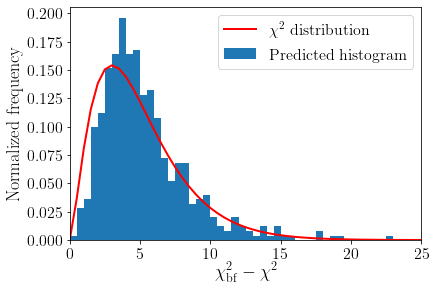

05: Training the ML algorithm¶
import SMEFT19
d = SMEFT19.ellipse.load('../data/ellipses/rotBII.yaml')
ML = SMEFT19.ml.train(['../data/samples/randompoints.dat', '../data/samples/samplealbl.dat', '../data/samples/sampleaqbq.dat'],
'../data/samples/validationpoints.dat', '../data/MLmodels/xgb_lh.json', d['bf'], headers=0)
0.6555325116199011
Linear regression¶
Here we check that the ML approximation correctly reproduces the likelihood of the datapoints
SMEFT19.ml.regr(ML, '../data/samples/validationpoints.dat', '../data/plots/regression_xgb')
(0.9710853265238792, 0.0)
Distribution¶
Now we generate a small sample of points with a Montecarlo algorithm using the ML-approximation of the likelihood
newpoints = ML.newpoints(500)
df = pd.DataFrame(newpoints)
preds = ML.model.predict(df)
import matplotlib.pyplot as plt
from scipy.stats import chi2
import numpy as np
And compare the resulting histogram with the p.d.f of a \(\chi^2\) distribution with 5 degrees of freedom
_ = plt.hist(2*max(preds) - 2*preds, bins=50, range=(0,25), density=True, label='Predicted histogram')
plt.plot(np.linspace(0,25,51), chi2(5).pdf(np.linspace(0,25,51)), label=r'$\chi^2$ distribution', lw=2, c='r')
plt.xlim([0,25])
plt.xlabel(r'$\chi^2_\mathrm{bf} - \chi^2$', fontsize=18)
plt.ylabel('Normalized frequency', fontsize=18)
plt.legend(fontsize=16)
plt.xticks(fontsize=16)
plt.yticks(fontsize=16)
plt.tight_layout(pad=0.5)
plt.savefig('../data/plots/hist_xgb.pdf')
plt.savefig('../data/plots/hist_xgb.pgf')

SHAP¶
newpoints += ML.newpoints(500)
ML = SMEFT19.ml.load_model('../data/MLmodels/xgb_lh.json', '../data/samples/validationpoints.dat', d['bf'])
dfnewpoints = pd.DataFrame(newpoints, columns=['C', 'al', 'bl', 'aq', 'bq'])
dfnewpoints['logL'] = ML.model.predict(dfnewpoints)
dfnewpoints.to_csv('../data/samples/mlpoints.dat', sep='\t', index=False)
SMEFT19.ml.SHAP_bf('../data/MLmodels/xgb_lh.json', d['bf'])
Setting feature_perturbation = "tree_path_dependent" because no background data was given.
Base value: 19.718127893342555
SHAP values: [[1.6465868 2.0282266 0.9966447 1.3356845 2.0434434]]
Total prediction: 27.768725395202637
SMEFT19.ml.SHAP_summary('../data/MLmodels/xgb_lh.json', '../data/samples/mlpoints.dat', '../data/plots/SHAP_summary', 0)
Setting feature_perturbation = "tree_path_dependent" because no background data was given.
import matplotlib.pyplot as plt
import numpy as np
names = ['C', 'al', 'bl', 'aq', 'bq']
minx = [-0.25, -0.15, -0.025, -0.12, 0]
maxx = [-0.05, 0.15, 0.025, 0.07, 3.5]
ticks = [np.linspace(minx[i], maxx[i], 5) for i in range(5)]
for i in range(5):
SMEFT19.ml.SHAP_param('../data/MLmodels/xgb_lh.json', '../data/samples/mlpoints.dat', i, 0)
ax = plt.gca()
ax.set_xticks(ticks[i])
plt.xlim([minx[i], maxx[i]])
plt.xticks(fontsize=16)
plt.yticks(fontsize=16)
plt.tight_layout(pad=0.5)
plt.savefig(f'../data/plots/SHAP_{names[i]}.pdf')
Setting feature_perturbation = "tree_path_dependent" because no background data was given.
Setting feature_perturbation = "tree_path_dependent" because no background data was given.
Setting feature_perturbation = "tree_path_dependent" because no background data was given.
Setting feature_perturbation = "tree_path_dependent" because no background data was given.
Setting feature_perturbation = "tree_path_dependent" because no background data was given.